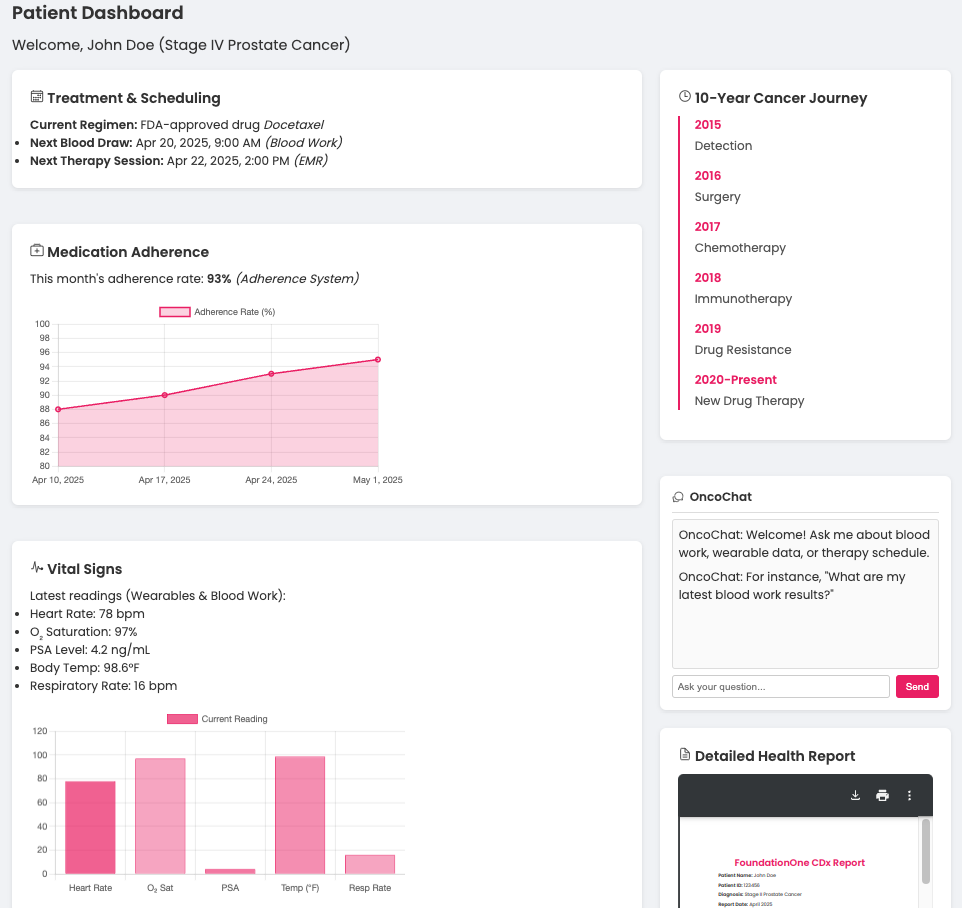

Everything You Need in One Place
Personalized Care
Treatment recommendations tailored to your unique medical profile and real-time data from wearables and tests.
Real-Time Insights
Continuous health updates from wearable devices and smart monitoring — always knowing where you stand.
Medication Reminders
Never miss a dose with automated, smart reminders and personalized adherence tracking.
Symptom Tracking
Log and monitor symptoms in real time so your care team can adjust your plan proactively.
Support & Community
Connect with support groups and access expert advice to navigate every step of your journey.
How We Solve the Problem
Onco-Ally was built by MIT professionals with a bold vision to unify fragmented cancer care. By integrating advanced AI, real-time data from wearables, and multilingual support, we ensure that you receive timely, accurate care and comprehensive support throughout your entire treatment journey.
